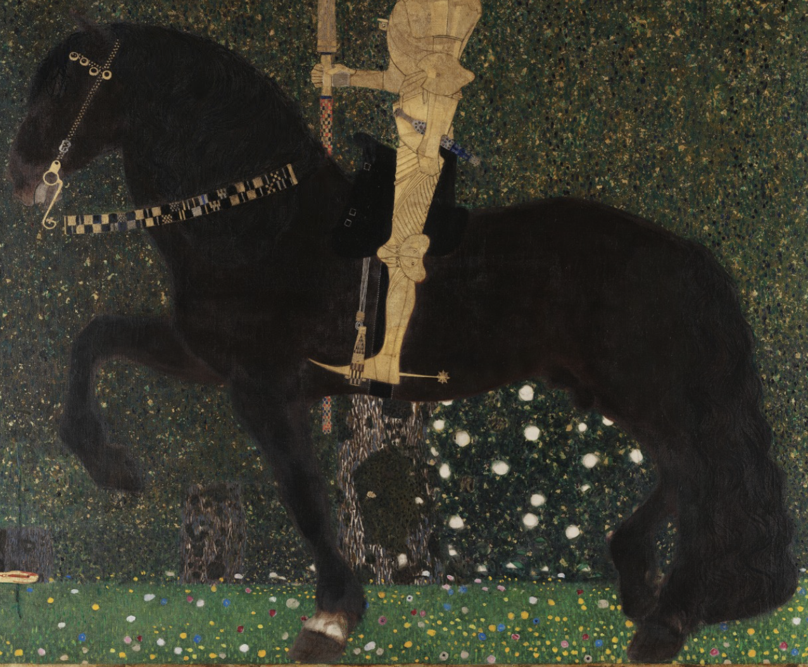
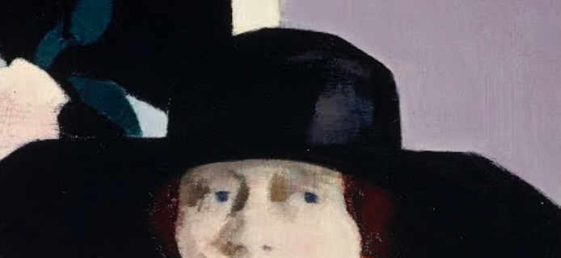
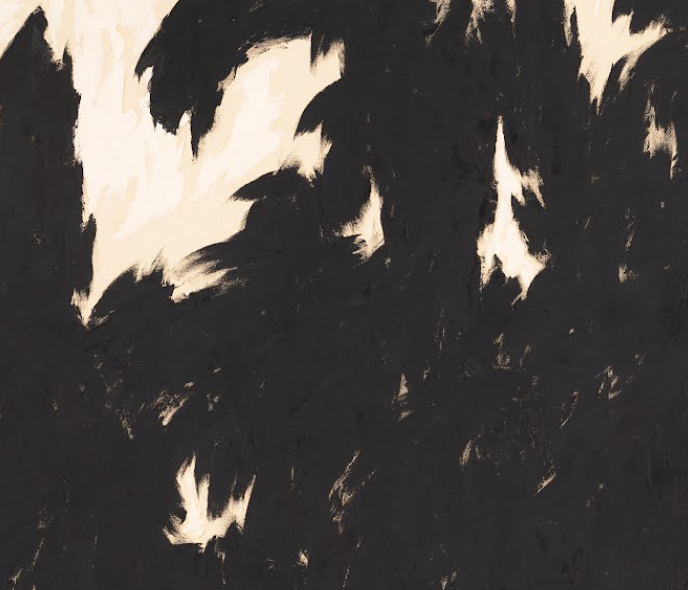
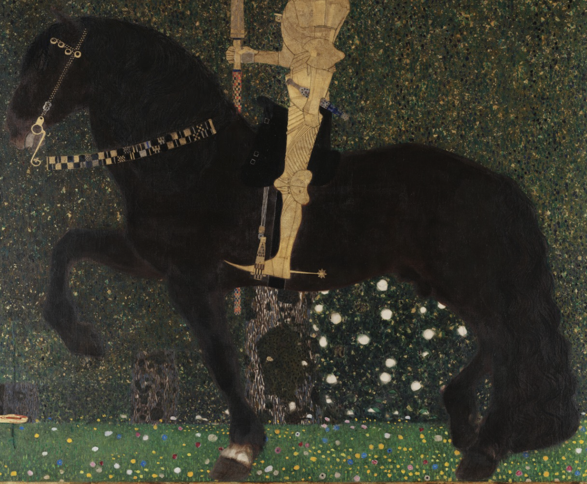
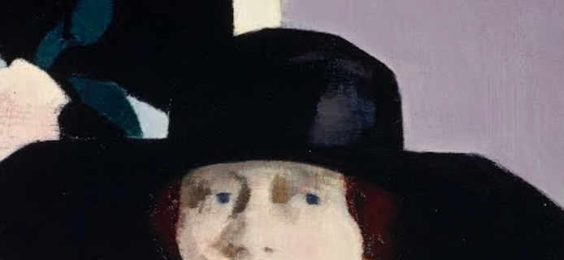
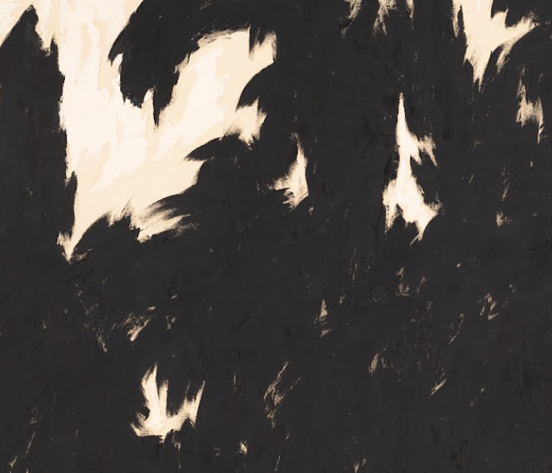

Back
The color black was the first pigment
used by artists in prehistory and the first ink used by
book printers, with that, black caires an important
legacy and it is related to sophistication and
is associated with:
Power, elegance, vunerability, protection, and
mistery
Today,
Don't misjudge the basics, trustworthy choices.
Sometimes less is more
Black is a color that is some poeple might only relate with sadness,
fear, the dark and death. Be fearless, be the one that people
will be afraid of losing, look ahead, it is to easy to be sad
 




